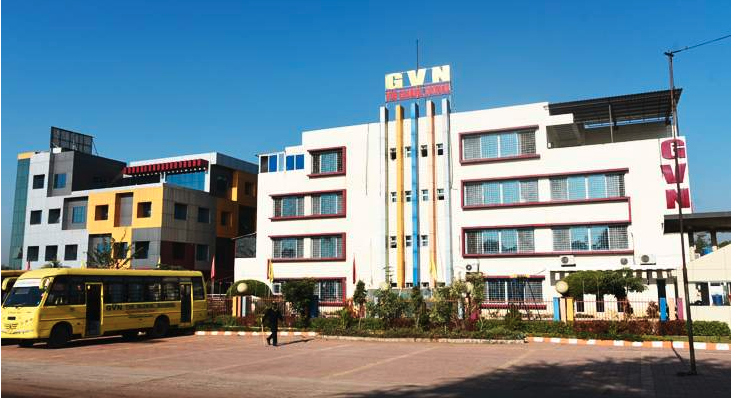
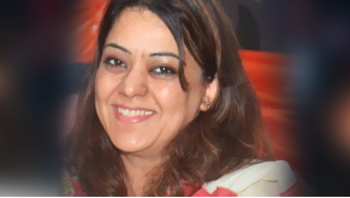

GVN - The Global School
Home
About Us
Academics
Facilities
Gallery
Arts
ABOUT US

WE STAND FOR ALL-ROUND EDUCATION
Today, under the aegis of School, the School is regarded as a center of educational excellence. The school’s philosophy is based on a set of strongly held beliefs which are put into action everyday by every member of the institution. Its philosophy focusses on treating each child in a sensitive manner and providing appropriate developmental programmes so as to encourage not just learning but also imbibe a love for learning.
SCHOOL provides an environment that is safe, clean, healthy and child-oriented, an environment that offers challenging play and learning choices at a range of developmental levels. Activity areas are appropriately designed to enable children to explore, experience, and most importantly, succeed.
The School is a trendsetter and aims to provide quality education through the use of latest educational aids and unique amenities and facilities to create a proper ambience for study. These include:
A Teacher-Student ratio of 1:15
Computer learning from Nursery level itself.
Fully computerized Library with internet facility.
Air-conditioned classrooms and buses to protect children of tender age from air and noise pollution which enhances the efficiency of the students and teachers.
An ultra modern and well equipped Infirmary with a qualified in-house Doctor in attendance during the school hours.
The school owns a fleet of deluxe buses which are equipped with the latest facilities like GPS, cameras and mobile phones. Our teachers accompanies the children in each of the buses and ensures that children are handed over only to their family members. The buses are monitored with the help of the Global Positioning System installed in the Control Room at the School premises.
FOUNDER
GVN- The Global School has a commitment to excellence and aims to be an excellent school. The school provides safe, healthy, clean and positive environment for its students. We nature our students to become balanced and successful citizens.
VISION AND MISSION
Vision
Education is the apprentice of life. Our vision is to provide value based education with new innovations that so that our pupils grow into aesthetically rich, intellectually aware and integrated young people, capable of fulfilling their dreams and aspirations.
Mission
We embark on the mission of creating individuals who are confident about their potential and are goal oriented, sensitive to their environment and above all, co-creators of their own destiny. Our aim is to help a child realise his/her inner strength and give him a conducive environment to grow & evolve as a good social being and a global citizen.
At School, we aim to provide an academic environment which treats each child as a unique individual and develops him/her to the maximum potential and to provide variety of learning experiences which promote integrative growth in all areas, be it the physical, intellectual, moral or social. We lead un generating pratical & theeoietical knowledge that enables to students to understand & improve conditions of local & goul communities
Our vision is to strengthen the basic foundation and thereafter allow the latent talent to fully develop. Creative energies need a caring & nurturing environment and this is what we endeavor to provide at School. Each student achieves optimal academic & personal potertial by providing a safe and nurturing learning environment. Wheek build strong foundation of character development & lifelong leading prepare students to understand, contribute to & succeed in a rapidly changing society.
ABOUT CHAIRMAN'S

MRS. SHALINI MANOJ BULCHANDANI (CHAIRPERSON)
Mrs. Shalini Manoj, Chairperson, GVN– The Global School, Bhopal. A compassionate human being. True leader is defined not as the shepherd of a flock but as the inspirer of Co-leadership. Mrs. Shalini Manoj answers this definition in every way.
Her youthful exuberance and vivacious spirit makes her participation in curricular activities during festival and other celebration.
She is zeal of a young champion
“The inspired and The Inspirer”.
Under her enlightened leadership GVN – The Global School has attained an excellent reputation for providing high-quality academic learning enriched by culturally rooted co-curricular education.
Her clear perception, preparation for the further and discerning mind will undoubtedly take the mission work farther and steer organization to greater glory.

WE HELP THE CHILDREN
To Achieve These Goals
THE GLOBAL SCHOOL
Sector -C,Govindpura,BHEL,Bhopal(M.P.)-462023
0755-2580041,91-9039000822
principal.gvntheglobalschool@gmail.com